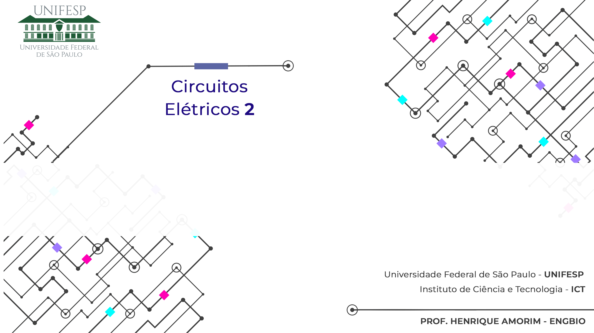
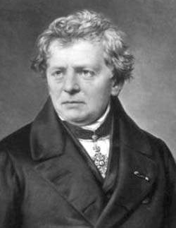
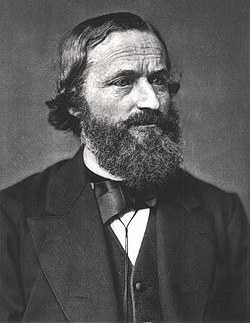

Revisão de Circuitos 1
Prof. Henrique Amorim - UNIFESP - ICT - Engenharia Biomédica
Conceitos básicos
| Corrente (A) | Tensão (V) | Potência (W) | Energia (J) |
|---|---|---|---|
| \(i(t)=\dfrac{dq}{dt}\) | \(v(t)=\dfrac{dw}{dq}\) | \(P=\dfrac{dw}{dt}\) | \(\normalsize\omega=\LARGE\int_{}^{}\normalsize=P\,dt\) |
\[P=v(t) \cdot i(t)=\left(\dfrac{dw}{dq}\right) \cdot \left(\dfrac{dq}{dt}\right)=\dfrac{dw}{dt}\]
Corrente: Fluxo de cargas;
Tensão: Diferença de potencial elétrico entre dois pontos;
Potência: Velocidade com que se consome energia; e
Energia: Representa o trabalho realizado.
Lei de Ohm
Altere o valor de
Fixando a corrente em \(I=2A\), responda:
- Calcule a queda de tensão no resistor
- Calcule a potência dissipada pelo resistor
- Qual o trabalho realizado durante 3 segundo
Aplicação direta da Lei de Ohm
Corrente na queda de tensão, potência positiva
Alternativas para o cálculo da potência
Integral para o cáculo do trabalho
Convenção Passiva
Convenção passiva: Sempre que a direção de referência para a corrente em um elemento estiver na queda de tensão, use um sinal positivo em qualquer expressão que relacione tensão com a corrente. Caso contrário (elevação de tensão) use um sinal negativo.
| \(P=\color{red}{\boldsymbol{+}}\,v \cdot i\) | \(P=\color{red}{\boldsymbol{-}}\,v \cdot i\) |
| \(P=\color{red}{\boldsymbol{-}}\,v \cdot i\) | \(P=\color{red}{\boldsymbol{+}}\,v \cdot i\) |
Relação de sinais para o cálculo da potência (elevação e queda de tensão)
Lei de Ohm

Lei de Ohm: Para certos materiais condutores, mantidas constantes as condições físicas (como temperatura), a intensidade de corrente elétrica (I) que os atravessa é diretamente proporcional à diferença de potencial elétrico (V) aplicada e inversamente proporcional à resistência elétrica (R) do condutor
Georg Simon Ohm
1789 - 1854
Alemão
Equações:
| \(V=R \cdot I\) | \(P=\dfrac{V^2}{R}\) | \(P=I^{2} \cdot R\) |
Leis de Kirchhoff

Lei de Kirchhoff das Tensões (LKT) – Lei das Malhas: Em qualquer percurso fechado (malha) de um circuito elétrico, a soma algébrica das diferenças de potencial (tensões) é igual a zero, considerando um referencial consistente de polaridade
Lei de Kirchhoff das Correntes (LKC) – Lei dos Nós: Em qualquer nó de um circuito elétrico, a soma algébrica das correntes que entram é igual à soma das correntes que saem, garantindo a conservação da carga elétrica
Gustav Kirchhoff
1824 - 1887
Alemão
Equações:
\(LKT\) |
\(LKC\) |
| \(\begin{matrix}n\\\Large\sum_{}^{} \\k=1\end{matrix} V_{K}=0\) | \(\begin{matrix}m\\\Large\sum_{}^{} \\k=1\end{matrix} I_{K}=0\) |
Divisor de Tensão
Associação em série: Um nó é compartilhado apenas por dois ramos (corrente constante)
Associação em paralelo: dois ramos compartilham dois nós (tensão constante)
A tensão é diretamente proporcional a resistência
Divisor de Corrente
Associação em série: Um nó é compartilhado apenas por dois ramos (corrente constante)
Associação em paralelo: dois ramos compartilham dois nós (tensão constante)
A corrente é inversamente proporcional a resistência
Leis de Kirchhoff
LKC - Lei de Kirchhoff da Correntes
\(\begin{matrix}m\\\Large\sum_{}^{} \\k=1\end{matrix} I_{K}=0\)
\(i_{1}+i_{4}=i_{3}+i_{2}\)
\(i_{S}=i_{1}+i_{2}+i_{3}\)
Ou
\(-i_{S}+i_{1}+i_{2}+i_{3}=0\)
LKT - Lei de Kirchhoff das Tensões
\(\begin{matrix}n\\\Large\sum_{}^{} \\k=1\end{matrix} V_{K}=0\)
Possíveis equações:
\(-V_{0}+V_{1}-V_{6}+V_{5}=0\)
\(V_{6}+V_{2}-V_{3}-V_{4}=0\)
\(-V_{0}+V_{1}+V_{2}-V_{3}-V_{4}+V_{5}=0\)
Exemplo - Leis de Kirchhoff
Exercício: Utilize os conceitos de Leis de Ohm, Leis de Kirchhoff e divisores de tensão e corrente para calcular \(I_{x}\).
Resposta:
Exemplo - Leis de Kirchhoff
Etapa 1:
Com o valor dado de \(I_{A}\), calcular a queda de tensão do resistor \(R_{2}\):
Exemplo - Leis de Kirchhoff
Etapa 2:
Utilizando a LKT pelo caminho fechado entre \(V_{S}\), \(R_{2}\) e \(R_{5}\), calcular a queda de tensão de \(R_{5}\):
Exemplo - Leis de Kirchhoff
Etapa 3:
Com o valor da tensão \(V_{R5}\), calcular a corrente no ramo de \(R_{5}\) (Lei de Ohm):
Exemplo - Leis de Kirchhoff
Etapa 4:
Conhecidas as correntes \(I_{R5}\) e \(I_{A}\), é possível calcular a corrente \(I_{R3}\) pela LKC:
Exemplo - Leis de Kirchhoff
Etapa 5:
Com \(I_{R3}\) e \(R_{3}\) é possível calular a queda de tensão de \(R_{3}\) (Lei de Ohm):
Exemplo - Leis de Kirchhoff
Etapa 6:
Utilizando LKT no caminnho \(R_{4}\), \(R_{3}\) e \(R_{5}\), é possível calcular a queda de tensão de \(R_{4}\):
Exemplo - Leis de Kirchhoff
Etapa 7:
Pela Lei de Ohm, calculamos \(I_{x}\) por meio de \(R_{4}\) e \(V_{R4}\)
Equipamentos Ideiais
- O Amperímetro é responsável por medir corrente - Ligado em série
- O Voltímetro é responsável por medir tensão - Ligado em paralelo
Em um Amperímetro ideal a resistência interna é igual a zero, enquanto em um Voltímetro ideal a resistência interna é igual a infinito. Essa relação torna o erro de medição igual a zero, uma vez que os equipamentos ideais não absorvem energia do sistema.
Equipamentos Ideiais
Interpretação simbólica dos equipamentos ideiais
Equipamentos Não Ideiais
Amperímetro e Voltímetro analógicos acoplados ao circuito
Topologia de Circuitos
Nós \((n)\): \(N_{a}, N_{b}, N_{c}, N_{d}\)
Nós essenciais \((ne)\): \(N_{b}, N_{c}, N_{d}\)
Ramos \((b)\): \(V_{1}, R_{1}, R_{2}, R_{3}, R_{4}, V_{2}\)
Ramos essenciais \((be)\): \(V_{1}-R_{1}, R_{2}, R_{3}, R_{4}, V_{2}\)
Malhas \((m)\): \(M_{1}, M_{2}, M_{3}\)
Circuito Planar
Métodos de análise - Nr. Equações
\(be\) → número de equações
(Número de correntes desconhecidas)
\((ne -1)\)
\(LKC\)
Tensão dos Nós
\(be - (ne -1) = m\)
\(LKT\)
Correntes de Malha
Protocolo para obter as Tensões dos Nós
Lembrem-se que essas etapas devem ser compreendidas e não decoradas
- Identificar os nós essenciais
- O número de equações necessárias para determinar as tensões dos nós será igual a: \(ne-1\) (nós essências - 1)
- Alguns casos particulares podem reduzir o número de variáveis desconhecidas
- Designar um nó essencial como nó de referência
- Representar pelo símbolo apropriado
- Normalmente, ao escolher o nó com o maior número de ramos como referência, o sistema de equações tende a ser mais simples (embora cada circuito possua características específicas e eventuais restrições)
- Definir as Tensões do Nós como a elevação de tensão entre o nó de referência e os demais nós essenciais
- Considerar que as correntes SAEM (ver exemplo) dos nós essenciais (desconsiderar o nó de referência)
- Essa convenção padroniza a análise algébrica e facilita a obtenção das equações
- Calcular as tensões por meio da resolução de um sistema de equações lineares
- O sistema deverá necessáriamente ser um Sistema Possível e Determinado (SPD)
Representação do nó de referência
Tensão dos Nós Exemplo
Exercício: Calcule a tensão dos Nós
Tensão dos Nós Exemplo
Equação dos nós:
Gabarito:
Tensão dos Nós Exemplo
Tensão dos Nós Exemplo
Tensão dos Nós Exemplo
Protocolo para obter as Correntes de Malha
Lembrem-se que essas etapas devem ser compreendidas e não decoradas
- Para resolver as equações de malha de forma intuitiva, devemos considerar que todas as correntes de malha rotacionam no mesmo sentido
- Sempre que um ramo for compartilhado por duas malhas, a corrente do ramos será a diferença entre a corrente da malha analisa e a corrente da malha vizinha
- Quando um ramo for exclusivo de uma malha, a corrente do ramo será igual a corrente de malha
Equações das malhas:
\(\begin{cases} -V_{1}+R_{1} \cdot i_{a}+R_{3} \cdot \left(i_{a}-i_{b}\right)=0 \\[0.1pt] \\ R_{3} \cdot \left(i_{b}-i_{a}\right)+R_{2} \cdot i_{b}+V_{2}=0 \end{cases}\)
Exercício - Correntes de malha
Exercício: Calcule a potência do resistor de \(2\Omega\) pelo método das correntes de malhas
Resposta:
EXercício - Correntes de malha
Exercício: Calcule a potência do resistor de \(2\Omega\) pelo método das correntes de malhas
Pelo método das tensões o número de equações é:
\(ne-1=4-1=3\)
Pelo método das correntes das malhas o número de equações é:
\(be-(ne-1)=m=3\)
Porém uma das correntes já é conhecida:
EXercício - Correntes de malha
EXercício - Correntes de malha
EXercício - Correntes de malha
Super Nó vs Super Malha
Método das tensões dos nós:
Super Nó: Quando uma fonte de tensão é compartilhada entre duas tensões dos nos
Método das correntes das malhas:
Super Malha: Quando uma fonte de corrente é compartilhada por duas malhas
Equivalencia de Fontes
Equações para equilavências:
\(V_{s}=R \cdot I_{s}\)
OU
\(I_{s}=\dfrac{V_{s}}{R}\)
Exemplo - Conversão de Fontes
Exercício: Utilize a o conceito de equivalência entre fontes para simplificar o circuito e calcular \(V_{o}\).
Resposta:
Exemplo - Conversão de Fontes
Etapa 1:
Explicação
Exemplo - Conversão de Fontes
Etapa 2:
Explicação
Exemplo - Conversão de Fontes
Etapa 3:
Explicação
Exemplo - Conversão de Fontes
Etapa 4:
Explicação
Definição Th
Exemplo - Equivalente de Thevenin
Exercício: Exercício: Calcule o equivalente de Thévenin em relação aos terminais a e b do circuito abaixo
Resposta:
Exemplo - Equivalente de Thevenin
Etapa 1:
Explicação
Exemplo - Equivalente de Thevenin
Etapa 1:
Explicação
Exemplo - Equivalente de Thevenin
Etapa 1:
Explicação
Super Posição
O princípio da superposição que a tensão ou corrente em um ramo, pode ser obtida pela análise isolada das fontes independentes.
Etapa 1 – “Desligue” as fontes independentes exceto uma. Calcule as correntes e/ou tensão nos ramos de interesse;
Etapa 2 – Repita a Etapa 1 até que todas as fontes independentes tenham sido analisadas de forma isolada; e
Etapa 3 – Some as tensões e/ou correntes ramo a ramo
Ver exemplo a seguir
Exemplo - Superposição
Exercício: XXXX
Resposta:
Exemplo - Superposição
Exemplo - Superposição
Etapa X:
Explicação
Exemplo - Superposição
Etapa X:
Explicação
Exemplo - Superposição
Etapa X:
Explicação